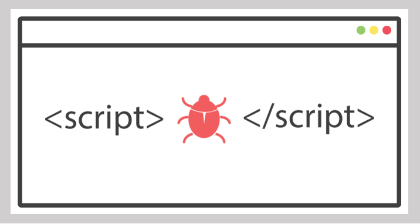

클라이언트 사이드 기반 웹 공격
3가지 유형

1. 브라우저 자체 취약점
브라우저 자체 취약점을 통해 해당 취약점 공격 코드를 삽입하여 원하는 코드를 실행하거나 특정 목적을 달성하는 공격입니다.
악성코드 감염으로 인해 신원 도용, 재정적 손실, 파일 영구 삭제 등의 피해가 발생할 수 있습니다.

2. 피싱 공격
악의적인 웹사이트로 정부기관, 금융기관 등의 웹사이트로 위장하여 사용자의 개인 정보, 금융 정보를 탈취하는 공격입니다.
직접적으로는 예금인출이나 결재대납 등의 피해가 발생할 수 있으며, 그밖에 간접적인 피해로는 광고성 전화 및 스팸메일 수신, 명의도용 등이 있습니다.

3. 스크립트 기반 웹 공격
XSS, CSRF, CSS Injection, CRLF Injection 등과 같이 스크립트를 기반으로 하는 공격입니다.
쿠키 및 세션 탈취를 통해 사용자 권한을 얻거나 사용자의 브라우저에서 악성 스크립트를 실행할 수 있습니다.